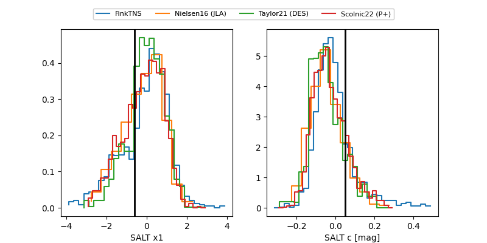

FINK: ZTF25aboxset
Lasair: ZTF25aboxset
ALeRCE: ZTF25aboxset
TNS: 2025wyf
YSE: 2025wyf
ZTF25aboxset (ztf,fink)
2025wyf (tns,yse)
ATLAS25ldd (atlas)
equatorial (ra, dec) = (357.3156,+46.07143)
galactic (l, b) = (111.8107,-15.45340)

last atlaso=18.45, ztfg=18.78, ztfr=18.35
11 atlaso, 15 ztfg, 10 ztfr detections